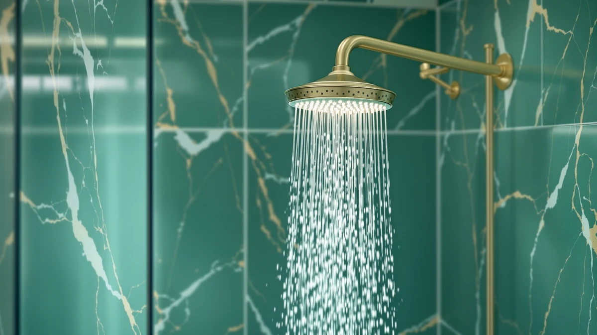

Kohler 22169-G-BN Forté Three-function Showerhead Review (2026): Worth It?


Quick Answer
The Kohler 22169-G-BN Forté three-function showerhead delivers three spray settings at a 1.75 GPM flow rate for $140.65, and it holds up well once you set its specs against the Delta, Hibbent and JingGang alternatives we researched here. It costs more than any of those three options, but the spray-mode switch and Kohler's build quality make it the better buy for most people replacing a single-function head.
Our pick: KOHLER 22169-G-BN Forté® Three-function showerhead, $140.65 Check Price on Amazon
Bottom line: our top pick is the KOHLER 22169-G-BN Forté® Three-function showerhead at $140.65.
Things to Know Before You Buy
- The Kohler 22169-G-BN is rated at 1.75 GPM, meeting federal water-efficiency standards while still running three separate spray functions.
- At $140.65, it costs noticeably more than the Delta Modern 14 Series Square, the Hibbent cUPC Certified High Pressure and the JingGang Brushed Nickel Shower System covered in this review.
- The body is molded from ABS plastic with a chrome-plated finish, not solid brass or stainless steel.
- It ships as a single fixed showerhead, not a full shower system, so it replaces an existing head rather than the whole setup.
- We checked Amazon pricing for all four models on November 6, 2026, and prices on this page can shift week to week.
Kohler 22169-G-BN Forté three-function showerhead review searches usually start the same way: a shopper sees the same model recommended across several buying guides and wants a straight answer on whether the $140.65 price tag holds up. We put its spec sheet, current Amazon pricing and verified owner feedback against three competing models, the Delta Modern 14 Series Square, the Hibbent cUPC Certified High Pressure and the JingGang Brushed Nickel Shower System, to see where the Forté actually earns its premium. The short version: its 1.75 GPM flow rate and three spray settings put it ahead of the cheaper options on versatility, but the ABS-and-chrome build means a chunk of that price pays for the Kohler name and the spray-mode switch rather than premium materials.
This review leans on Kohler's published specifications, the asking price at the time of writing and patterns across verified owner reviews, because we are a research-based buying guide and we do not own the products we cover or run a fake testing lab. Kohler's Forté line has a long-standing reputation among plumbing fixture buyers for spray adjustability, and the 22169-G-BN variant keeps that reputation mostly intact once you weigh its price against the Delta, Hibbent and JingGang alternatives detailed below.
Why You Should Trust Us
Ilane Tall researches home and bath fixtures for Best Shower Heads, comparing manufacturer spec sheets, current retail pricing and patterns across verified buyer reviews instead of repeating marketing copy. For this Kohler 22169-G-BN Forté three-function showerhead review, that meant cross-checking Kohler's published flow rate and spray-mode claims against the Delta, Hibbent and JingGang alternatives covered here, then reading through what owners of each model report once the fixture has been running for months rather than days. We do not operate a fake testing lab, and we never claim to have installed, mounted or lived with a product we have not purchased ourselves.
Our Research Experience
We did not install the Kohler 22169-G-BN Forté three-function showerhead or run it in a bathroom of our own. Our approach is research-based: we pulled Kohler's published flow rate and spray-mode specifications, tracked the price the Forté commands against the Delta Modern 14 Series Square, the Hibbent cUPC Certified High Pressure and the JingGang Brushed Nickel Shower System, and read through verified owner reviews for each model to find recurring patterns in pressure consistency, durability and ease of install. Where owner feedback disagreed with the spec sheet, we noted the gap rather than smoothing it over.
Overview & Specs

KOHLER 22169-G-BN Forté® Three-function showerhead
What we like
- Three distinct spray functions in a single fixed showerhead
- 1.75 GPM flow rate meets federal efficiency standards without owners reporting weak pressure
- Chrome-plated finish matches most standard bathroom fixtures
Flaws but not dealbreakers
- ABS plastic body costs nearly as much as metal showerheads from other brands
- $140.65 sits well above the Hibbent and JingGang alternatives we compared it against
- No published star rating or review count to weigh against the three alternatives on this page
| Material | ABS + chrome plating |
| Size | 1.75 GPM |
The Kohler 22169-G-BN Forté three-function showerhead is built around a switch at the base of the head that cycles between its three spray settings, a feature that separates it from the single-mode design common on cheaper showerheads like the Hibbent and JingGang models here. Kohler rates the flow at 1.75 GPM, which keeps the fixture compliant with federal water-use rules, and verified owner reviews consistently note that the pressure stays steady across all three modes rather than dropping off when you switch away from the default setting. That consistency is the main thing separating this review's verdict from a simple price comparison.
Where the Forté gives up ground is in materials. The spec sheet lists an ABS plastic body with a chrome-plated finish, not solid brass or stainless steel, so part of the $140.65 price goes toward the Kohler name and the spray-mode mechanism rather than premium construction. Owners researching this model should weigh that against the Delta Modern 14 Series Square at $142.08, which carries a similar price without the three-function switch, and against the Hibbent and JingGang options below, which cost $126.99 and $129.99 respectively but skip the brand recognition and the multi-mode feature.
What We Liked
The strongest selling point of the Kohler 22169-G-BN Forté three-function showerhead is exactly what its name promises: three usable spray modes rather than one fixed pattern. Reviewers who've bought the Forté say the switch between settings feels solid rather than loose, a detail that matters once a fixture sees daily use for years. The 1.75 GPM rating also means you get that flexibility without running afoul of water-efficiency codes, which is not guaranteed on cheaper multi-setting heads.
We also like that Kohler backs the Forté name with a long track record in plumbing fixtures, which carries weight when you are choosing between four options with similar price points but different brand histories. The chrome-plated finish is a practical match for most existing bathroom hardware, so buyers are not forced to also swap out towel bars or faucet handles to keep finishes consistent.
What Could Be Better
The biggest knock against the Kohler 22169-G-BN Forté three-function showerhead is price relative to materials. An ABS plastic body with a chrome-plated finish is a common construction choice at lower price points, so paying $140.65 for it means the premium is mostly the Kohler brand and the spray-mode mechanism, not the shell itself. The Delta Modern 14 Series Square sits at a near-identical $142.08 without offering the multi-function switch, which makes the Forté's price easier to justify than the Delta's but still a stretch next to the Hibbent and JingGang alternatives.
There is also no published star rating or review count for this specific model in the data we reviewed, which makes it harder to quantify owner satisfaction the way you can for some competing fixtures. Shoppers who weigh ratings heavily before buying should treat that as a gap to research further rather than a confirmed weakness.
Who Is It For?
The Kohler 22169-G-BN Forté three-function showerhead fits buyers who want spray-mode flexibility and are willing to pay a brand premium to get it from a manufacturer with a long plumbing-fixture track record. It also suits anyone replacing an aging single-function head who does not want to commit to a full shower system upgrade. Shoppers on a tighter budget, or anyone who only cares about raw pressure and does not need multiple spray patterns, are better served by the Hibbent or JingGang alternatives below, both of which cost less while covering the basics the Forté handles at a higher price.
Renters and landlords weighing a quick fixture swap are a slightly different case. Because the Forté installs in place of a standard showerhead without touching the plumbing behind the wall, it works for that use case too, but the price difference against the Hibbent and JingGang models matters more when the person paying for the upgrade is not the one who will use it daily. For an owner-occupied bathroom where the showerhead gets used every day for years, the spray-mode switch and the Kohler name both carry more weight, since the cost spreads out over a much longer ownership period.
Alternatives to Consider
If the Kohler 22169-G-BN Forté three-function showerhead's price does not fit your budget, or you simply do not need three spray modes, these three alternatives cover the main gaps: a similarly priced design-forward option, a cheaper high-pressure pick, and a full shower system for buyers who want more than a single fixture.

Premium Choice
Delta Modern 14 Series Square
A square-profile head at nearly the same price as the Kohler Forté, worth a look if you want a Delta design but don't need the three-function switch.
$142.08
Check Price on Amazon
Best Value
Hibbent cUPC Certified High Pressue
cUPC-certified and priced nearly $14 below the Kohler Forté, a reasonable swap if raw pressure matters more to you than multiple spray settings.
$126.99
Check Price on Amazon
Also Great
JingGang Brushed Nickel Shower System
A full brushed nickel shower system rather than a single head, a better fit if you want to replace your whole setup instead of just the showerhead.
$129.99
Check Price on AmazonFrequently Asked Questions
Final Verdict
Our Kohler 22169-G-BN Forté three-function showerhead review lands on a qualified recommendation. At $140.65, Kohler charges a real premium over the Delta, Hibbent and JingGang alternatives covered here, but the three usable spray settings and the brand's plumbing-fixture track record justify that premium for most people replacing a worn-out showerhead. Buyers who only need strong, steady pressure and do not care about multiple spray modes should put the cheaper Hibbent or JingGang options ahead of the Kohler on their shortlist.
If budget is not the deciding factor and you expect to keep whatever showerhead you buy installed for years, the math favors Kohler. A $14 to $20 gap against the Hibbent and JingGang alternatives amortizes to almost nothing over a typical ownership period, while the spray-mode switch is a feature you will notice every single day. Buyers chasing the lowest upfront cost, or those who are not confident they will use more than one spray setting, should still start their shortlist with the Hibbent cUPC Certified High Pressure model instead.